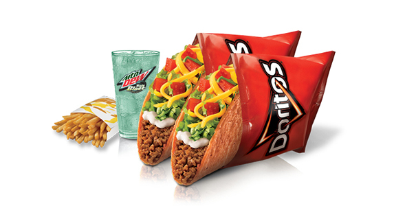

Doritos Locos Tacos Supreme Combo Tutorial

Doritos Tacos Locos is a complex dish, but you can do it! It consists of a combination of two Doritos Tacos Locos, one regular size fries, and 20oz of delicous Mountain Dew.
Here's how to make a hearty Doritos Tacos Locos Supreme Combo Meal!!
- Prepare your hands by covering them with delicous orange Dorito dust
- Then, add a large helping of dust onto your newly seasoned orange hands
- Finally, start blaming your team and complaining that your jungler keeps feeding
- Congratualtions!!! You are now a salty Mountain Dew drinking degen LoL player that is covered in Dorito dust!! Now go touch some grass.